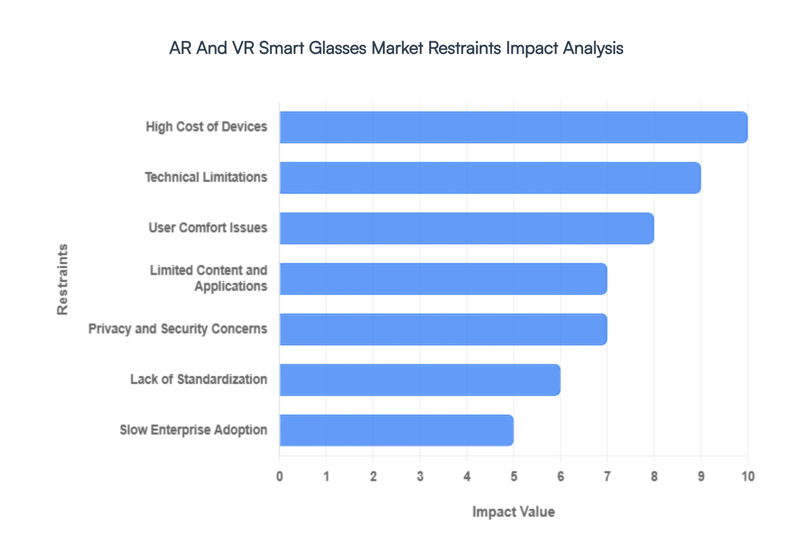
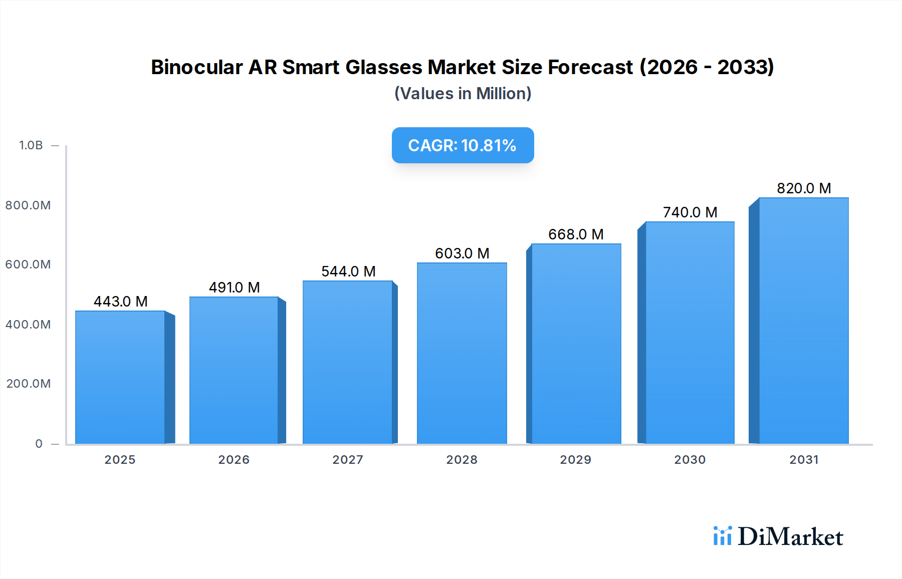

用户声音
场景 + 痛点
从真实用户声音与竞品缺口出发，经跨源验证与四专家加权评审，推导雷鸟 AR 眼镜的五个高优先产品机会与落地路径。



以产品经理的逻辑思维推导五条真实需求：每条均建立「用户场景 → 痛点 → 根因 → 证据」的完整因果链，并通过市场验证闭环（五源强支撑 + 双独立来源 + 跨 Tier 交叉）检验市场敏感度。点击卡片右下「查看需求文档」进入独立的标准产品需求文档（PRD）页面。
需求池全量视图：TOP5、观测池、伪需求占位三档状态，附分类与综合分。
| 编号 | 需求名称 | 分类 | 状态 | 综合分 |
|---|---|---|---|---|
| ID-001 | 全天候续航外挂电池模组 | 硬件 / 续航 | TOP5 | 90.8 |
| ID-002 | AI 第一视角拍摄 + 实时翻译 | 软件 / AI 能力 | TOP5 | 91.2 |
| ID-003 | 轻量化舒适佩戴（铰链 / 磁吸 / 材质） | 硬件 / 佩戴 | TOP5 | 90.5 |
| ID-004 | 独立支付（NFC / 扫码） | 软件 / 支付 | 伪需求 · 已剔除 | 42.0 |
| ID-005 | 电致变色 / 隐私智能镜片 | 硬件 / 光学 | TOP5 | 90.3 |
| ID-006 | 安卓应用生态 / RayNeo VM | 平台 / 生态 | TOP5 | 90.6 |
| ID-007 | 健康监测传感器融合 | 硬件 / 传感 | 观测池 | 76.4 |
以 GTM 职业核心能力，聚焦「产品完成后如何推向市场」：精准定位目标人群、打通渠道组合、设计变现定价、评估 TAM–SAM–SOM 市场规模并排布上市节奏。点击卡片右下「查看完整商业落地策略」进入独立的上市计划文档（与 TOP5 需求文档分设，前者讲推导、后者讲打法）。
全部 17 条证据按四个一级维度归类，下方可按维度筛选查看全量总表（点击任意行展开来源详情）。核验记录区标注每条证据的三级核验层级（L1 端内官方 / L2 专业媒体 / L3 社区社媒）。来源均为公开可核验渠道：官方参数 / 行业报告（洛图、Counterpoint、IDC）/ 社区核验（什么值得买、观察者网、知乎、搜狐）/ 竞品动作（XREAL、Rokid、Meta）。数据窗口 2025-05 至 2026-05。
| 编号 | 类型 | 证据摘要 | 来源 |
|---|
每条证据均经过三级核验：L1 端内官方（参数 / 发布会）、L2 专业媒体（洛图 / Counterpoint / IDC / 科技媒体）、L3 社区社媒（什么值得买 / 知乎 / 观察者网 / 搜狐）。
以「真实场景锚定 → 跨源交叉验证 → 10 维评分排序 → 分需求落地推演」为四步闭环，把客观信号转化为可量化的 TOP5 产品机会。每步下钻可见采集策略、数据规则与评分模型。
从真实使用场景 + 用户痛点切入，禁止"先造功能再找场景"。场景须带可核验来源。
用户声音 / 竞品缺口 / 行业趋势三轨交叉，单点来源仅作假设。
10 维 × 四专家加权，≥90 进 TOP5；不足则补强证据而非改分。
分需求 GTM 策略 + 二级路径，转为可执行上市计划。
以真实使用场景为锚，从什么值得买 / 知乎 / 观察者网 / 搜狐中提取痛点，每条附可点击链接与真实日期，拒绝概括性"用户说"。
追踪近 18 个月 XREAL / Rokid / Meta Ray-Ban 的新品类动作，定位对标缺口，凡竞品已具备须定位为升级而非从零建设。
以洛图 / Counterpoint / IDC 与搜索趋势为标尺，验证赛道增速、规模拐点与技术成熟度，避免把个人判断当作行业事实。
京东 / 什么值得买 / 知乎 / 小红书 / 观察者网 / 搜狐 / IT之家，构成核心客群一手信号。
Reddit / Trustpilot / Amazon 评论，验证 Meta Ray-Ban、XREAL 海外反馈，校准国际化窗口。
洛图科技、Counterpoint、IDC、XREAL / Rokid / Meta 官方参数页，提供规模与技术基线。
赛道增速 / 规模拐点（行业报告），确认处在上升通道而非存量内卷。
头部竞品已有对应动作或明确缺口，证明需求被市场侧验证而非孤证。
技术成熟度 / 供应链可达性，排除短期无法落地的"科幻需求"。
相邻品类已验证的商业化路径（如 Meta Ray-Ban 拍摄眼镜），提供可复用范式。
每条入选需求须在市场 / 竞品 / 行业 / 参考行业 / 用户五类来源上均有可被核验的支撑。
评估场景契合、价值主张与优先级排序，确保需求对齐产品战略主轴。
评估 TAM–SAM–SOM、增速与竞争格局，验证商业规模与窗口期。
评估痛点强度、付费意愿与使用频次，守住真实需求而非自嗨。
评估技术可行、供应链与落地周期，把机会收敛到可交付边界。
四专家各自对 10 个维度独立打分（0–100），形成四维评分矩阵，避免单一视角偏差。
产品 30% / 市场 25% / 用户 25% / 硬件 20% 四角色加权，先得单维分，再按维权重聚合为单需求分。
综合分 ≥90 进 TOP5；不足则回到证据链补强真实来源，而非调整权重或分数占位。
L1 端内官方 / L2 专业媒体 / L3 社区社媒，逐条标注核验层级；高权重结论须有 L1 或 L2 支撑。
每条证据附真实可点击 URL + 真实日期，链接内容与摘要一致，失效链接须替换而非删除。
标"直接定义根因"须 ≥2 独立来源交叉验证，单一来源降级为假设 / 待验证。
不伪称"竞品无某功能"；缺口须定位为升级 / 补全；功能对比须同类可比，严禁跨维度混比。